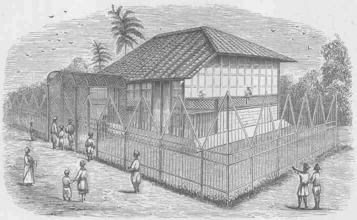

Image caption: A drawing of a school house with people standing around it.
Image source: London Missionary Society, "Bengali Girls' School, Calcutta." 1869, https://commons.wikimedia.org/w/index.php?title=File:Bengali_Girls%27_School,_Calcutta_(LMS,_1869,_p.12).jpg&oldid=424004261
Colonial Missionary Schooling
Start Here
Step 1: Explore what it might be like to be a student attending a colonial missionary school:
What is taught and learned? What is valued?
- Take quiz: What grade would you get in colonial missionary school?
- Play choose your own adventure game inspired by this primary source from One More Voice
Step 2: Read annotated bibliography about the historical context:
The primary sources from One More Voice inspired the interactive activities in Step 1 showing what it might be like to be a student attending a colonial missionary school. One More Voice is “a digital humanities recovery project that identifies, documents, and critically engages with the voices of racialized creators in British imperial and colonial archives.” The critical works provide a lens for the primary sources.
Why did we do this?
Colonial views still impact students' experiences in school today, beyond the specific communities explored on this site. To decolonize education, a useful place to begin is by learning about the historical context.
What next?
Step 3: Learn more about decolonizing education.
Here are some articles meant for general audiences:
- Carapezza, Kirk. “Professors Push Growing Campaign To ‘Decolonize’ College Curriculums.” GBH News. 4 Aug. 2020. https://www.wgbh.org/news/education/2020/08/04/professors-push-growing-campaign-to-decolonize-college-curriculums
- Kawi, Terry. “Decolonizing Our Classrooms Starts With Us.” PBS Education, 3 Aug. 2020. https://www.pbs.org/education/blog/decolonizing-our-classrooms-starts-with-us
This news segment explains how some colleges are trying to decolonize their curricula and the challenges that come with the efforts. Some activists say that the syllabus and course requirements are great places to begin decolonization efforts.
Kawi explains how decolonizing education and being an antiracist are ongoing practices. It requires reflection about how ideologies have shaped our believes and actions. This article provides a list of reflection questions for teachers and suggests principles to keep at the forefront when lesson planning and teaching.